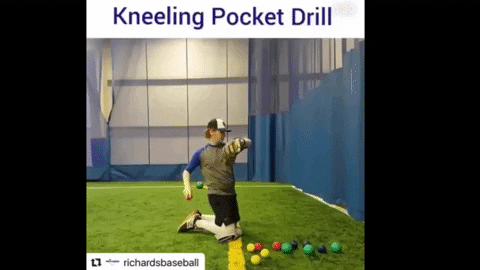
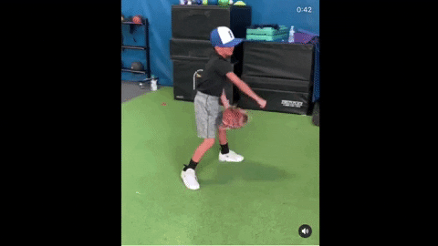
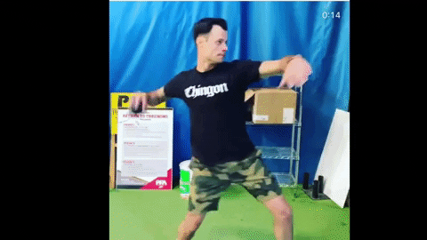

Pitching Exercises
These are some excercises that I think would help you with your arm strength as well as accuracy. You can do these drills against a wall with a tennis ball or with a partner with a regular baseball. These drills are a progression, so I would reccommend doing these in order to get the most out of it.
Depending on how you feel you can pick and choose on what drills you want to do. If you feel good, I would try to do everything. If you're sore I would do some drills, play light catch and skip the flat ground. You can also change the number of throws you do for each drill. A lot of it is also figuring out what works and which drills you think helps you the most.
MAKE SURE TO TRY TO DO SOME SORT OF WARM UP BEFORE YOU THROW. GET YOUR BODY TEMP UP.
Cues to Remember
- Be Athletic, almost like you're a quarterback.
- Try to keep the angle between your bicep and forarm at 90 degrees or a little under.
- Don't worry about getting your arm up, it should automatically go up.
- Again, be ATHLETIC
- Kneeling Throws 
- Do 5 - 10 throws
- Before each throw, make sure to see that the angle between your bicep and forearm is around 90 degrees.
- Follow through with your throw
- Standing Throws 
- Do 5 - 10 throws
- If you look closely when he takes out the ball, he does a row motion where the elbow retracts back. Emphasize this part.
- Once you get the hang of this, try to be smooth and fluid with your motion. Your arm should not pause or stop.
- Walking Backwards Throws
- Do 5 - 10 throws
- This is similar to the previous drill, but walking backwards.
- Try to keep on walking while you throw.
- Emphasize being fluid and the 90 degree rowing motion.
- Walking Forward and Backwards Throws
- Do 5 - 10 throws
- This incorporates the previous excercise, but now we are adding in a throw going forward
- Try to get some sort of rhythm when you throw. Remember be athletic. Think you're a quarter back.
- Emphasize being fluid and the 90 degree rowing motion.
- Sideways Swing Throws
- Do 5 throws.
- Keeping that 90 degree angle becomes important when doing this drill.
- Try to be fluid and get a good rhythm
- When doing your arm swings, make sure your glove arm is going up and out too.
- Stationary Sideways Throws 
- Do 5 -10 throws.
- The video shows the guy throwing against a wall, but when you're playing catch with a partner try be quick when you throw. Once you catch the ball, try to get rid of it quickly.
- When you're doing this still keep in mind of being fluid and the row motion of retracting that elbow
- Step Back Throws
- Do 5 -10 throws.
- This drill is for you to feel yourself keep your weight back on you back leg when you throw.
- Again try to be fluid and remember some of the key points we talked before.
- Double Play Throws
- Do 5 - 6 throws
- This drill is for you to be quick and athletic when you throw.
- You can do this by someone tossing you the ball and you trying to thow it as quick as possible like you're turning a "double play" or you can throw the ball up and catch and throw it really quick.
- Don't throw side arm though.
- Long Toss
- Do after your drills
- This is your primary method of building armstrength
- Once you start feeling warm, start scooting back and see how far you can throw it
- Make sure to use your legs. Do a crow hop or a shuffle step when you throw.
- Flat Ground
- 10 - 15 throws at the end of catch play
- Have your partner squat down a little closer than pitching distance.
- Try to have your partner move the target and you try to hit his target
- Focus on accuracy and not trying to throw hard.